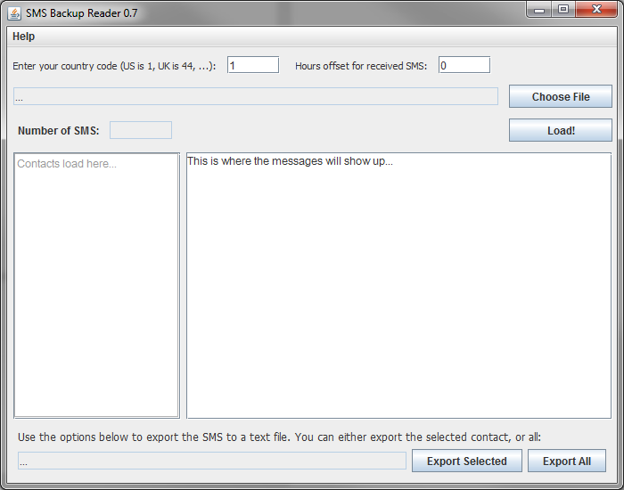

Projects by devadvance
Hello! You've reached my projects page. This site hosts anything released under the name devadvance. For learning anything personal or academic related, please see my personal site:
matthewgjoseph.com
CircularSeekBar
 Android CircularSeekBar Custom View/Widget
Android CircularSeekBar Custom View/WidgetThis is a custom circular SeekBar. It can be used to create SeekBars that are:
- Full Circles
- Semi-Circles
- Ellipses
- Semi-Ellipses
In addition, it is fully customizable via XML attributes, far beyond the default values.
Visit the Project
SMS Backup Reader
 This is a cross-platform (Windows, OS X, *nix) application designed to read the XML backup files produced by the Android app SMS Backup and Restore by Ritesh. It is able to display backups in a threaded view, export a conversation to a text file, or export all conversations to one text file.
Visit the Project
All content authored by: devadvance (+Matt Joseph)